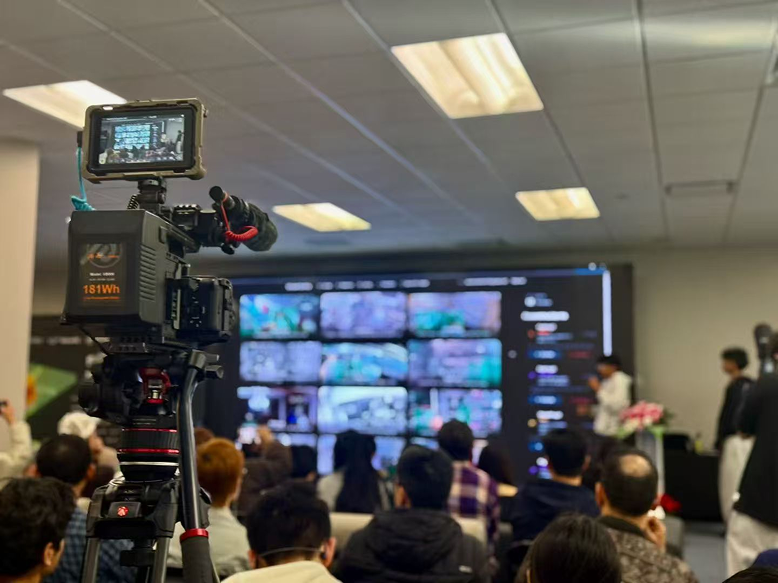

KMC +
Berkeley
BETA
Partnering with one of UC Berkeley's leading venture communities, we support storytelling, founder visibility, and content production for emerging founders and ideas. We help early-stage innovation become easier to understand, share, and support.